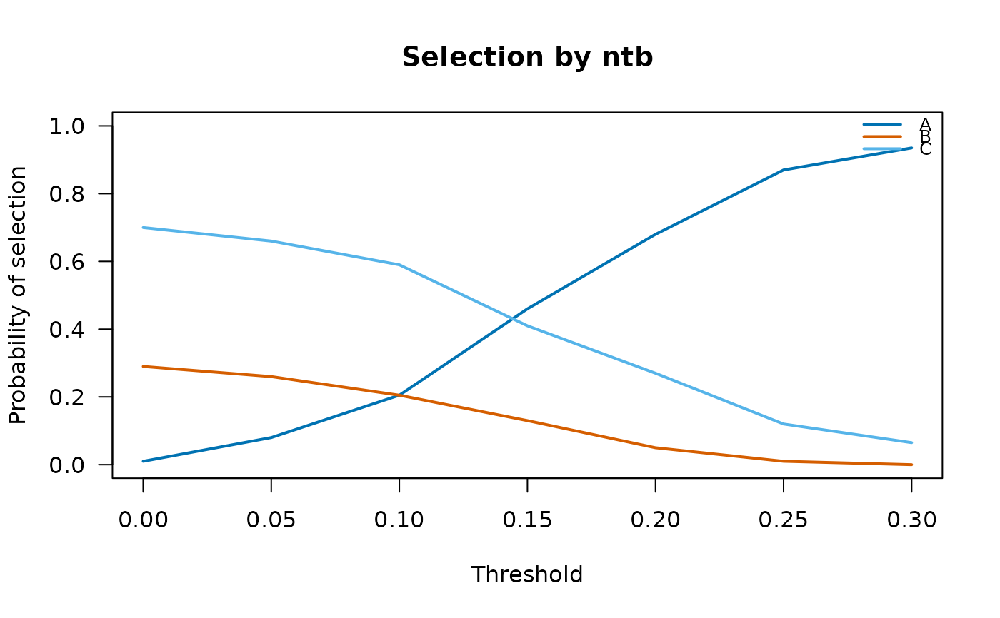

Print and plot selection probabilities
Source:R/plot.SelectionOC.R, R/print.SelectionOC.R
SelectionOC-methods.Rdprint() shows the probability that the decision rule selects each
cohort, with one row per threshold and one column per cohort. plot()
draws these probabilities against the threshold, one line per cohort, or as
bars when there is a single threshold. Results of several statistics
combined with rbind() are printed as a data frame and cannot be
plotted together.
Arguments
- x
Data frame returned by
SelectionOC.- main
Title of the plot.
- ...
Not used.
- digits
Number of significant digits.
Value
print() returns x invisibly. plot() returns
invisibly the matrix of selection probabilities, with one row per
threshold and one column per cohort.
Examples
set.seed(1)
res <- data.frame(sim = rep(1:200, each = 3), group = rep(c("A", "B", "C"), 200),
is_reference = rep(c(TRUE, FALSE, FALSE), 200))
res$ntb <- ifelse(res$is_reference, NA,
rnorm(600, rep(c(0, 0.05, 0.15), 200), 0.1))
oc <- SelectionOC(res, "ntb", threshold = seq(0, 0.3, by = 0.05))
oc
#> Probability that the rule selects each cohort
#> Statistic: ntb (Net treatment benefit against the reference)
#>
#> threshold A B C
#> 0.00 0.010 0.290 0.700
#> 0.05 0.080 0.260 0.660
#> 0.10 0.205 0.205 0.590
#> 0.15 0.460 0.130 0.410
#> 0.20 0.680 0.050 0.270
#> 0.25 0.870 0.010 0.120
#> 0.30 0.935 0.000 0.065
plot(oc)
